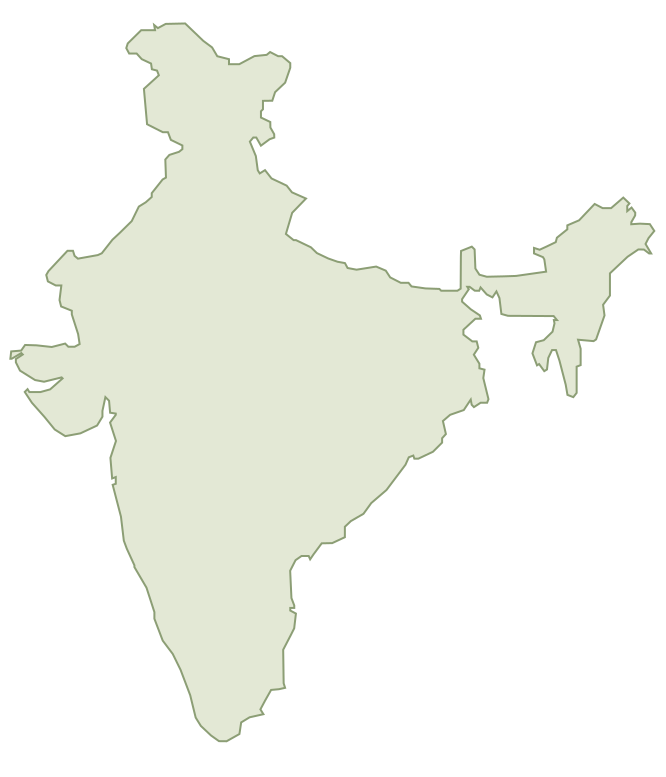
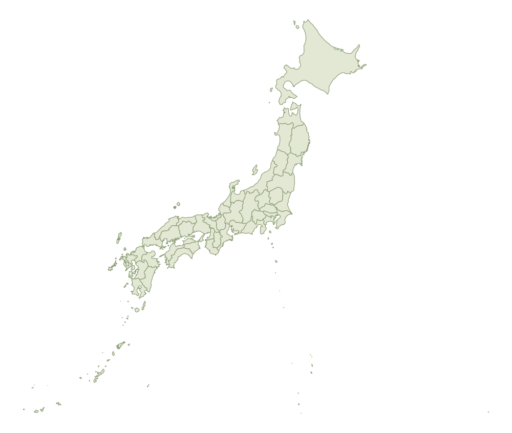

I'm Ujjwal, a software engineer at Microsoft in Hyderabad, with roots in Purnea. With 4+ years of experience, I build Windows experiences, from Cloud PCs to AI agents. My work has impacted 1B+ users.
Hey! I'm miniUjju. Welcome to Ujjwal's little world.
miniUjjua little robot. a lot of curiosity.
✳ Engineer by profession✳ Explorer by curiosity✳ Always up for badminton
01 / THINGS I'VE HELPED BUILD
Small details. Real-world impact.
Windows is where my work meets people. A few projects, and the thinking behind them.
01MICROSOFT / WINDOWS AI
Less clicking. More getting things done.
Worked on the computer-using agent behind Copilot Actions on Windows, completing tasks across desktop and web apps inside a secure Agent Workspace.
Behind the work +
Improved the agent's task success through prompt engineering, benchmark-driven experiments, and platform fixes. Added a new action to expand what the agent can do.
Windows AI team at IDC, Hyderabad, March 2025-present. The experience was previewed with Windows Insiders.
Integrated Windows 365 Cloud PCs into Windows 11 through Switch, Boot, and Boot for Frontline shared devices.
Sep 2023 & Feb 2024shipped in Windows Moments releases
Behind the work +
Delivered virtual desktop animations and indicators, and seamless access to physical PC Settings from a Cloud PC. Built the telemetry that became the main source of boot and switch success metrics, with unit, automated, and UI automation tests behind these features.
Windows Shell Experience team at IDC, Hyderabad, June 2022-February 2025.
Taking a hackathon idea all the way to a new Emoji Panel launch point in the Windows 11 taskbar system tray.
~150%+increase in usage after General Availability
Behind the work +
Owned the prototype, design specification, experimentation, implementation, and telemetry. Also contributed to Character Map. As the team's accessibility champion, fixed accessibility bugs and worked directly with customers with disabilities, helping the Emoji Panel earn a Gold accessibility rating.
Contributed to the Windows 11 setting that lets users remap the Copilot key to Right Ctrl or Context Menu, preserving familiar shortcuts and accessibility workflows.
Impact figures reflect the contributions and results described in my resume.
MORE THAN THE DAY JOB
Build. Share. Repeat.
Some of the best learning happens when you make things with other people.
CODETRONICS / 2020-2022
A starting point for the next batch.
Built the college coding club's website with HTML, CSS, and JavaScript: topic-wise learning resources and a home for the club's members. Benefited 1,000+ students.
Alongside building, I mentored college juniors through coding classes.
Languages, fundamentals, and the habits that help turn an idea into something reliable.
01 / Languages
C++
C
C#
Python
TypeScript
JavaScript
SQL
02 / Web & UI
XAML
HTML
CSS
03 / CS fundamentals
Data Structures & Algorithms
Object-Oriented Programming
OS
DBMS
COM
04 / AI & agents
AI Agents
Prompt Engineering
Benchmark-Driven Optimization
05 / Engineering
UI Automation
UT
FT
Automated Testing
Fuzz Testing
Telemetry
Accessibility
02 / CONNECTING THE DOTS
From Purnea, with curiosity.
A few chapters that brought me here. Different places, new things to learn, and people to learn them with.
every chapter adds something
At home in Hindi & English.
THE ROOTS
Purnea, Bihar
Where I'm originally from. The starting point of the story.
2016
BHM High school
Completed Class 10.
2016-2018 / PATNA
Preparing for the next step
IIT JEE preparation at Parth Ashram. Completed Class 12 at +2 High School BMP 7 in 2018.
2018-MAY 2022 / DHANBAD
IIT (ISM) Dhanbad
B.Tech in Electronics and Communication Engineering. Coding, mentoring, and a college community along the way.
8.46 CGPA
JUNE 2022-FEBRUARY 2025 / HYDERABAD
Software Engineer
Joined Microsoft on June 13, 2022. Part of the Windows Shell Experience team at IDC, working on Windows 365 integration, Expressive Input, and accessibility.
MARCH 2025-PRESENT / HYDERABAD
Software Engineer 2
Part of the Windows AI team at IDC, building agentic experiences for Windows. Worked on Copilot Actions, Copilot key remapping, and Snipping Tool reliability.
03 / A FEW GOOD DETOURS
Away from the keyboard. Out into the world.
23places along the way India & Japan
Places I've studied, worked, and wandered through. Pick a pin or a place below to open a little travel note.
A LITTLE ATLAS / INDIA & JAPANN ↑
India 17 places

Purnea / roots
Japan 6 places

a few dots, a lot of stories
Places in my storyCountries shown at different scales. Pins approximate.